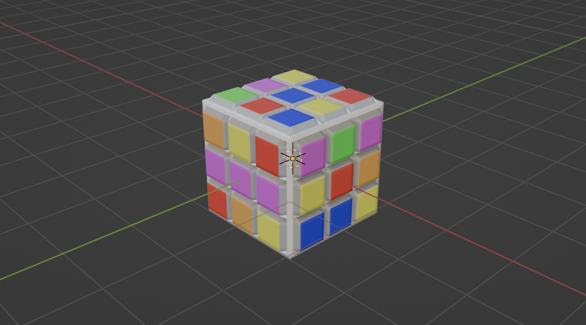
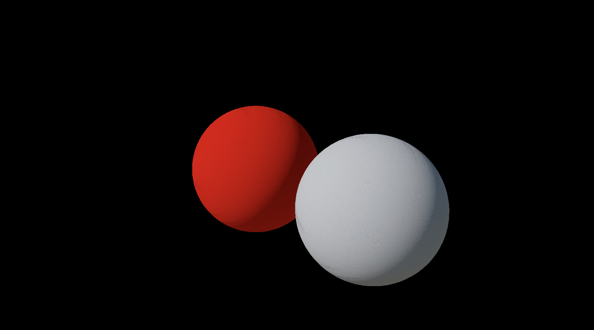

I create a pipeline, a vertex shader and a fragment shader for each material. I separately store the models into model lists by their materials so that during rendering, I can bind the pipeline once for each kind of material and then bind specific material descriptor set for each unique material since binding can be expensive.
I create a material for each model. I structure material as a container of textures. A material contains all possible textures owned by all material. I convert all properties of a material into 2D texture map to reduce the number of material types.
Each texture contains neccessary vulkan components for texture image such as VkImage, VkDeviceMemory, VkImageView, VkSampler and VkDescriptorImageInfo to bind for rendering.
My Model A2-create
I create a high-resolution and a low-resolution model for a rubrik's cube. I also create a normal texture, a albedo texture and a displacement texture.
Here's the low resolution rubrik's cube:
Here's the high resolution rubrik's cube:

I create the rubrik's cube in both high resolution and low resolution version. In the high resolution version, I subdivide the cube to increase its resolution and add all the detail for each plastic panel in the cube. I bake this into a normal map and use it for the low resolution cube. I also paint the plastic panels with different colors and bake color into a albedo texture. I add a displacement map as well.
My Code
Loading lighting environments A2-env
I include a simple environment maps VkTextureCube environmentMap for Environment and Mirror material in ViewerApplication, the Vulkan app defined in "src/include/viewer.h". It is shared by all materials of these 2 kinds. I expand UniformBufferObject in "src/include/vertex.hpp" to include mat4 light, a transformation matrix to transform objects from world space to light's local space (the environment map's local space), and vec3 eye, the camera's eye position.
The shader for Environment is implemented in "src/shaders/env.shader.frag" and "src/shaders/env.shader.vert". The shader for Mirror is implemented in "src/shaders/mirror.shader.frag" and "src/shaders/mirror.shader.vert". For Environment, the normal is first converted to world space and then to tangent space and then to light's space and used for sampling value from environmentMap. For Mirror, the view direction is calculated as the direction between eye and vertex position. The view direction is also converted to world space, tangent space then to light space and used for sampling value from environmentMap.
The rgbe value sampled from HDR environmentMap is converted to radiance using toRadiance() function defined in a common glsl file "src/shaders/common.glsl". The eventual color is tone mapped radiance value.
Here's an image of cubes rendered with mirror(left) and environment(right) materials.
(Camera is placed along positive y axis)
Tone mapping A2-tone
I used Uncharted 2 filmic tone mapping operator by John Hable with implementation in uncharted2Tonemap in "src/shaders/common.glsl".
Here's a graph of filmic tone mapping's curve. It has three parts, a linear section, a shoulder, and a toe. John Hable explains that "a toe gives you crisper blacks, a shoulder gives you a softer transition to your overexposed highlights, and the linear section should look relatively unchanged".
I use VK_COLOR_SPACE_SRGB_NONLINEAR_KHR color space and VK_FORMAT_B8G8R8A8_SRGB image format.
Here's screenshot of environment material without tone mapping (the cube on the right).
Here's screenshot of environment material with tone mapping (the cube on the right).
Lambertian material A2-diffuse
I add VkTextureCube lambertianEnvironmentMap for Lambertian material in ViewerApplication. It is the irradiance map generated by pre-filtering the original environment cubemap using uniform sampling. The vulkan app will load lambertianEnvironmentMap when there are Lamertian material in the scene.
The Lambertian shader is implemented in "src/shaders/lamber.shader.frag" and "src/shaders/lamber.shader.vert". In fragment shader, the albedo color is sampled using textual coordinate and multiplied by the radiance sampled from lambertian environment map as the final color.
I implemented the pre-filtering cube utility function prefilterEnvironmentMapLambertian in "src/cube.cpp". The cube executable takes in 3 arguments input.png --FLAG ouput.lambertian.png. It generate environment map for lambertian when the flag is --lambertian. It first converts input pixel value from rgbe to rgb. Then it randomly sample spherical coordinate for each texel of the output cubemap using theta in range [0, pi/2] and phi in range [0, 2*pi] computed from Hammersley importance sampling. The spherical coordinate is then converted to cartesian direction, transformed by the texel direction and transformed to the world of input cubemap. Then the direction is used to look up for rgbe value from the input cubemap, which is weighted by cos theta. Lastly, the rgb value is mapped back to rgbe and saved as output. I have also tried uniformaly sampling theta and phi with fixed coordinates, however it has severe artifacts.
Here's the env-cube lighting environment and its lookup table.
Here's the rendering of 2 lambertian sphere

Normal maps A2-normal
I convert normal N and tangent T to world space and calculated bitangent B. I then transform the local normal sampled from normal map to world space using the matrix TBN. Lastly, I transform the new normal to light's space using light matrix and use the new normal to sample radiance from environment map.
Here's a scene of a plane with the lambertian material without normal map:
Here're screenshots of the lambertian material with normal map and rotated 90 degrees:
Here's the environment material with normal map:
Here's the mirror material with normal map:
Here's the lambertian material with normal map:
Here's the pbr material with normal map:
PBR material A2-pbr
Show screenshots or screen recordings of a variety of interesting material appearances demonstrating the parameter range of the "pbr" material.
I add VkTextureCube pbrEnvironmentMap to ViewerApplication for Pbr material. It is the HDR environment map generated by pre-filtering the original environment cubemap using importance sampling with GGX distribution and Hammersley sequence. I also add VkTexture2D lut which is the BRDF look up table generated for computing BRDF integration. For all properties of Pbr material, either float or vec3, I convert them to a small fixed-size texture. This helps reduces the variances of the material.
To get PBR environment map, run ./bin/cube input.png --ggx output.png. It will generate 5 mipmaps with names "output.ggx.N.png". To get lut, run ./bin/cube --lut output.png and it will generate output.lut.png. It is computed by taking each texture coordinates as (NdotV, roughness) and the result is a vec2 (scale, bias).
The shader for PBR material is defined in "src/shaders/pbr.shader.frag" and "src/shaders/pbr.shader.vert". In fragment shader, it computes the diffuse color the same way as in lambertian material. It computes specular shading using prefiltered color multiplied by (F * scale + bias).
Here's the env-cube look-up cubemaps in different mip level (roughness).
Here's the image of 2 pbr sphere with roughness=0.1, metallness=0.9 and roughness=0.9, metallness=0.1:
Displacement map A2x-displacement
Same as normal map, I converted all coordinates/direction to world space first and then use TBN matrix to convert them to tangent space. I then calculate the displaced texture coordinates using displacement map in tangent space and eventually turn the directions to light space for sampling environment map.
(I downloaded this displacement map and normal map online)
Here's the environment material with displacement map:
Here's the mirror material with displacement map:
Here's the lambertian material with displacement map:
Here's the pbr material with displacement map:
Here's the environment material with displacement map in different directions:
Performance Tests
Relevant information about testing system:
CPU: 10-core
GPU: 16-core
Memory: 16 GB
OS version: Mac OS 13.0.1 (22A400)
For the performance tests below, I rendered each test scene in headless mode with a events file documenting events for 10 iterations of animations with 120 frames per iterations. I then measured the frame time for each frame and calculated the average rendering time for each iteration or every 120 frames. I used the total rendering time for performance comparison.
Material Performance
Average rendering time for materials (with normal map) in low resolution rubik's cube scene
Environment: 0.330069s
Mirror: 0.333723s
Lambertian: 0.338941s
Pbr: 0.348661s
The environment material is the fastest while the pbr material is the slowest.
Average rendering time for Pbr material w/wo normal map in low resolution rubik's cube scene
Environment without normal maps: 0.277944s
Environment with normal maps: 0.330069s
The environment material without normal map is faster due to less computation.
Texture vs Vertex Detail
Average rendering time for
a high-resolution mesh with a lambertian material (high resolution rubrik's cube scene with 6146 vertices): 0.349299s
a low resolution mesh with a normal map and a lambertain material (low resolution rubrik's cube scene with 296 vertices): 0.338941s
The texture detail is cheaper than vertex detail when the high-resolution mesh has much more vertices than the low-resolution mesh.
Feedback
Please consider more time for the future assignments.